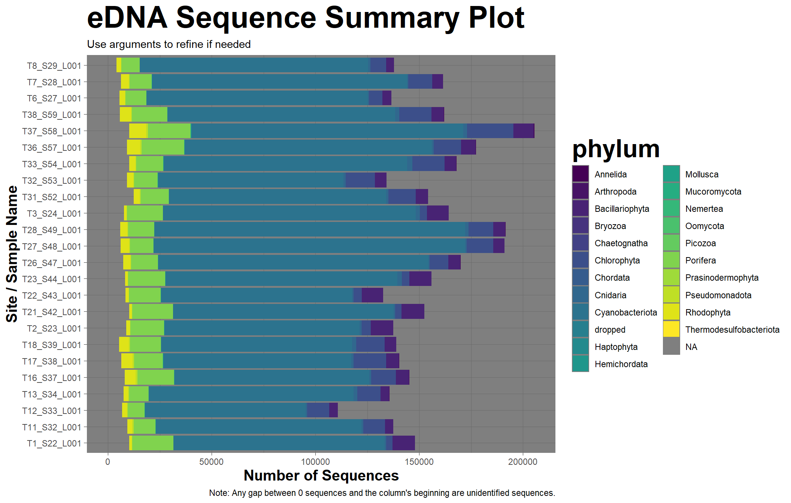
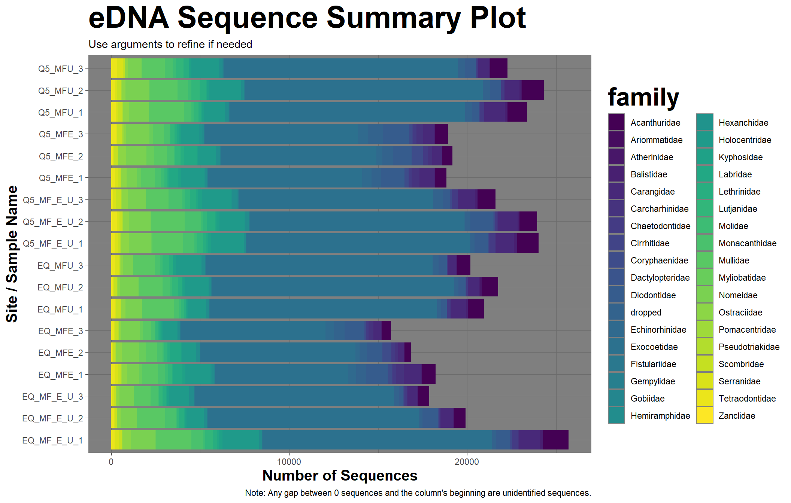

library(tidyverse) # For many things including ggplot and dplyrlibrary(here) # Easy saving and deployinglibrary(PNWColors) # Color palette based on PNW colors!library(ggthemes) # themes for ggplot
eDNA Datasets:
The data I will use today are a couple of eDNA datasets I have laying around. They are optimization tests, so in other words, I used these data a long time ago to make decisions about what methods to use moving forward.
However, I never properly looked at them myself! I want to change that.
First, load in the data:
Show code
# this one is a comparison of different taq polymerasestaq_test <- readr::read_csv(here("Week_08", "Data", "zotu_table.csv"))# this one is a comparison between different primer multiplexesmf_mplex_test <- readr::read_csv(here("Week_08", "Data", "fish_mp_data.csv"))
These two datasets are similar in structure, but were processed at different times and so have slight differences. The taq_test document is older, and so “NA” is used when taxonomy was uncertain. The mf_mplex_test was run after updates to our bioinformatics pipeline, replacing this with the word “dropped”.
What I plan to do with these datasets is as follows:
Make a simple function that will clean up the data by subtracting the contents of the negative controls (user specified) from all other samples, and then zeroes out any negatives. Make it flexible across both datasets.
Make a plotting function that allows for quick comparison across samples.
eDNA Data Cleaning Function:
See below for the details regarding the data cleaning function - clean_eDNA()
Show code
# set up the function with the following variables:# data = your dataframe# first_sample_ID = the first sample column name when reading from left to right# control_IDs = any negative or positive control column names, as they vary from file to file and thus should be specified in this case. If my data entry organization was better in the past, I wouldn't have to have this!clean_eDNA <-function(data, first_sample_ID, control_IDs) { data |>#remove everything that does not have a domainfilter(domain !=""| domain !="dropped") -> noblank_data noblank_data |>#pull the names of the sample columnsselect({{first_sample_ID}}:last_col()) |>colnames() -> sample_cols# Add a new row called neg_totals that is the sum of every negative column specified noblank_data |>mutate(neg_totals =rowSums(noblank_data[, {{control_IDs}}], na.rm =TRUE)) |># Edit all sample columns to subtract this new negative sum columnmutate(across(all_of(sample_cols), ~ .x - neg_totals)) |># change all negative numbers across all of the sample columns to zerosmutate(across(all_of(sample_cols), ~ifelse(.x <0, 0, .x))) |># remove the neg_totals rowselect(1:(last_col()-1)) -> clean_need_sum# add sum column of all sample columns clean_need_sum |>mutate(sample_sums =rowSums(clean_need_sum[, sample_cols], na.rm =TRUE)) |># remove any rows that have a zero sum after subtracting negative controlsfilter(sample_sums !=0) |># remove the sample_sums rowselect(1:(last_col()-1)) |># remove all negative control columns select(-all_of({{control_IDs}})) -> cleaned_eDNAreturn(cleaned_eDNA)}
Alright, letʻs see how it works with the datasets:
Show code
# This is the dataset I used to build the function:clean_eDNA(data = taq_test, first_sample_ID ="T10_S31_L001", control_IDs =c("T10_S31_L001", "T15_S36_L001", "T20_S41_L001", "T25_S46_L001", "T30_S51_L001", "T35_S56_L001", "T40_S61_L001", "T5_S26_L001")) -> clean_taq_test#it works! Let's try it with the other dataset:clean_eDNA(data = mf_mplex_test,first_sample_ID ="EQ_MFE_1",control_IDs =c("EQ_MFE_Neg", "EQ_MFU_Neg", "EQ_MF_E_U_Neg", "Q5_MFE_Neg", "Q5_MFU_Neg", "Q5_MF_E_U_Neg")) -> clean_mfu_test#Nice! It worked!
Plotting Function
For this section, I will be making a function that pivots long and plots the eDNA data cleaned from the previous function for quick visualization. I would like to make it compatible with both the clean and pre-cleaned data, for easy comparisons.
Show code
# create functionplot_eDNA <-function(data, first_sample_ID, plotby_taxa = phylum, stack_or_fill ="stack",domains ="none", kingdoms ="none", phyla ="none", classes ="none",orders ="none", families ="none", genera ="none", specieses ="none") {# set up labels for later based on argument inputsif (stack_or_fill =="stack") { y_axis <-"Number of Sequences" title_text <-"eDNA Sequence Summary Plot" } elseif (stack_or_fill =="fill") { y_axis <-"Relative Amount of Sequences" title_text <-"eDNA Relative Sequence Summary Plot" }################ Filter by identities:# if domain is specified, filter the data by the domains specifiedif (length(domains) ==1&& domains =="none") { data <- data } else { data <-filter(data, domain %in% domains) }# if kindom is specified, filter the data by the kingdoms specifiedif (length(kingdoms) ==1&& kingdoms =="none") { data <- data } else { data <-filter(data, kingdom %in% kingdoms) }# if phylum is specified, filter the data by the phyla specifiedif (length(phyla) ==1&& phyla =="none") { data <- data } else { data <-filter(data, phylum %in% phyla) }# if class is specified, filter the data by the classes specifiedif (length(classes) ==1&& classes =="none") { data <- data } else { data <-filter(data, class %in% classes) }# if order is specified, filter the data by the orders specifiedif (length(orders) ==1&& orders =="none") { data <- data } else { data <-filter(data, order %in% orders) }# if family is specified, filter the data by the families specifiedif (length(families) ==1&& families =="none") { data <- data } else { data <-filter(data, family %in% families) }# if genus is specified, filter the data by the genera specifiedif (length(genera) ==1&& genera =="none") { data <- data } else { data <-filter(data, genus %in% genera) }# if species is specified, filter the data by the species specified # hilariously, I had to make this argument "specieses" as I can't have it be "species" D:if (length(specieses) ==1&& specieses =="none") { data <- data } else { data <-filter(data, species %in% specieses) }# call data data |># retrieve the sample column names againselect({{first_sample_ID}}:last_col()) |>colnames() -> sample_cols# call it again data |>#pivot the data longer to better plot withpivot_longer(cols = sample_cols,names_to ="site",values_to ="num_sequences") -> long_eDNA# and plot! long_eDNA |>ggplot(mapping =aes(x = site,y = num_sequences, # base plot, fill by specified taxafill = {{plotby_taxa}})) +geom_col(position = stack_or_fill) +theme_dark() +coord_flip() +#theming and aetheticsscale_fill_viridis_d() +theme(title =element_text(face ="bold",size =25),axis.title =element_text(size =15)) +labs(title = title_text,subtitle ="Use arguments to refine if needed",caption ="Note: Any gap between 0 sequences and the column's beginning are unidentified sequences.",x ="Site / Sample Name", # labelsy = y_axis) -> eDNA_plotreturn(eDNA_plot)}
Now, plot the data, which works well enough with this invertebrate eDNA dataset:
Show code
# Note that the "first_sample_ID" changed, as the original "first_sample_ID" was a negative control that got removed.plot_eDNA(clean_taq_test, T11_S32_L001)#Disclaimer: The sample IDs are totally out of order because my data organization skills used to be sooooo bad. Please forgive me for this! I will not be fixing them, as these plots are not for any kind of detailed analysis, just a broad view of the data.# Note: I'm not sure why but this gives me a warning. I couldn't find the value it was referencing as depreciated.#ggsave(here("Week_08", "Output", "eDNAplot1.png"),# width = 11,# height = 7)

Figure 1: eDNA Summary for the Taq Polymerase test dataset by Phyla. Note that every single sample is from the same exact site, so similarities in composition across these samples are expected.
But it doesn’t work very well for this fish-only eDNA dataset:
Figure 2: eDNA Summary for the MiFish U/E Multiplex test dataset by Phyla. Note that every single sample is from the same exact site, so similarities in composition across these samples are expected.
That is, unless you’re only interested in the number of reads per sample.
That’s alright, with the addition of the plotby_taxa argument, it is easy to just keep going up/down the taxonomic tree until you find a reasonable number of organisms:
Show code
#the plotby_taxa entry cannot be in quotes, or else it will break.plot_eDNA(clean_mfu_test, EQ_MFE_1, plotby_taxa = family)#ggsave(here("Week_08", "Output", "eDNAplot3.png"),# width = 11,# height = 7)

Figure 3: eDNA Summary for the MiFish U/E Multiplex test dataset by Family. Note that every single sample is from the same exact site, so similarities in composition across these samples are expected.
I have also added an argument that allows for the relative number of sequences to be compared across each sample, in case there are proportions that are important to you.
Figure 4: eDNA Relative Sequence Amounts for the MiFish U/E Multiplex test dataset by Family. Note that every single sample is from the same exact site, so similarities in composition across these samples are expected.
Finally, it is extremely difficult to see color differences between taxa in many of these charts because there are too many at once. I have made it so that we can isolate specific orders, families, genera, etc. with the following arguments: (default = “none”, but these can be changed out for concatenated names to select specific groups at once.)
domains = “none”
kingdoms = “none”
phyla = “none”
classes = “none”
orders = “none”
families = “none”
genera = “none”
specieses = “none”
(Note: yes, this pains me as well as it is not the plural of “species”, but it must be disctinct from the column named “species” in the dataset.)
I have now added extra arguments to the function above that filter by categories specified.
For example below, I have filtered the cleaned Taq test data by domain Eukaryota only:
Figure 5: eDNA Summary for the Taq test dataset by Phyla, with only lines from domain Eukaryota. Note that every single sample is from the same exact site, so similarities in composition across these samples are expected.
Below I have selected only orders Zoantharia, Haplosclerida, and Nudibranchia, then plotted by family:
Figure 6: eDNA Summary for the Taq test dataset by family, with only lines from the orders Zoantharia, Haplosclerida, and Nudibranchia. Note that every single sample is from the same exact site, so similarities in composition across these samples are expected.
These arguments can be stacked, but note that the spelling must be exact.